A0015 8 帧
buff_thunder-animation_


buff_thunder-animation_
daoshi_phyattack-animation_


daoshi_skill1-animation_
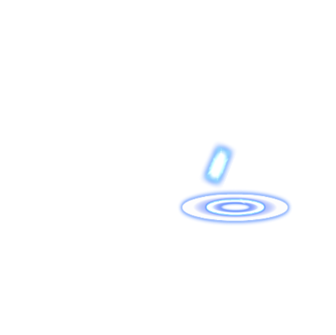
daoshi_skill1_2-animation_
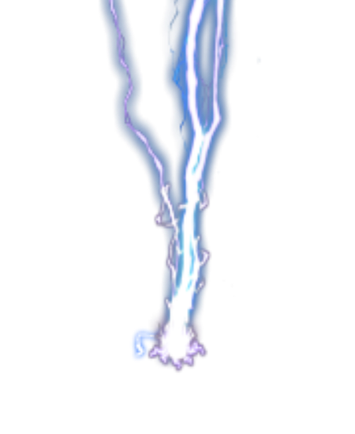
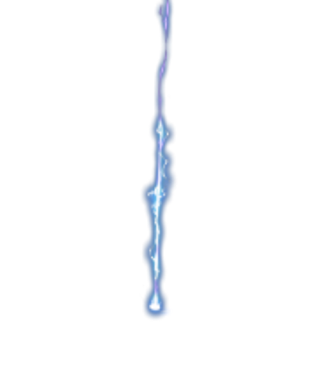
daoshi_skill2-animation_
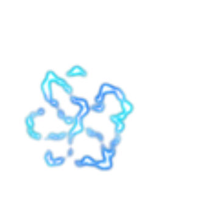
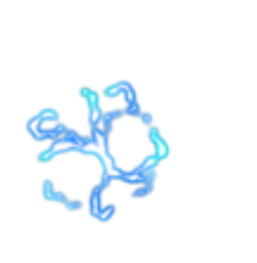
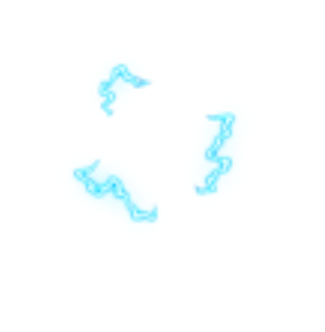
fazheng_phyattack_1-animation_
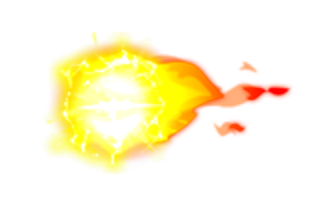
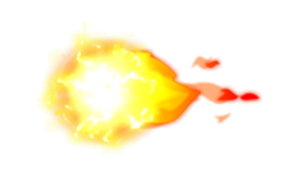
fazheng_phyattack_2-animation_
fazheng_skill1_1-animation_
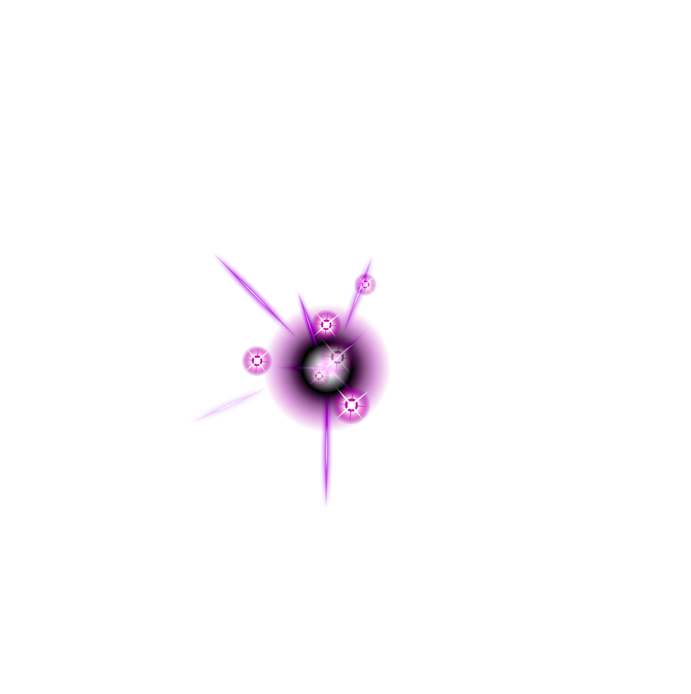
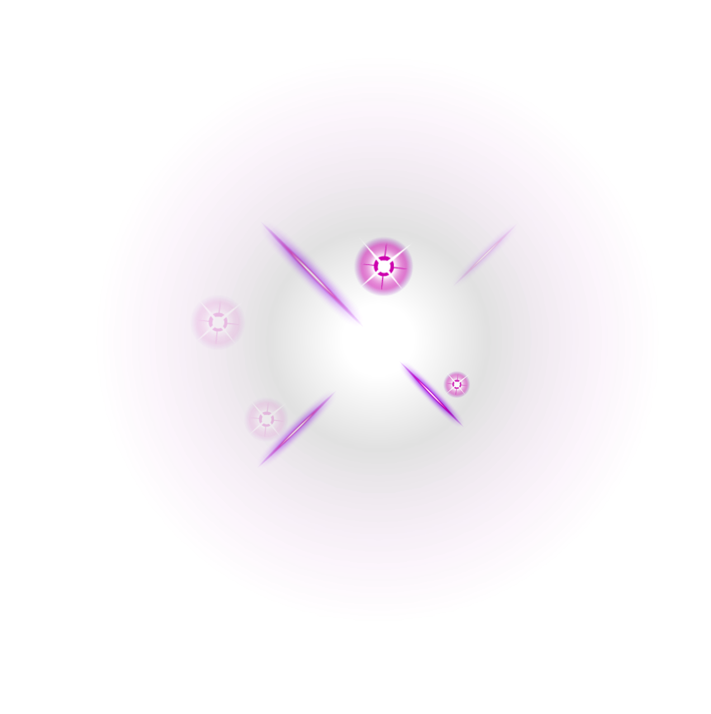
fazheng_skill1_2-animation_
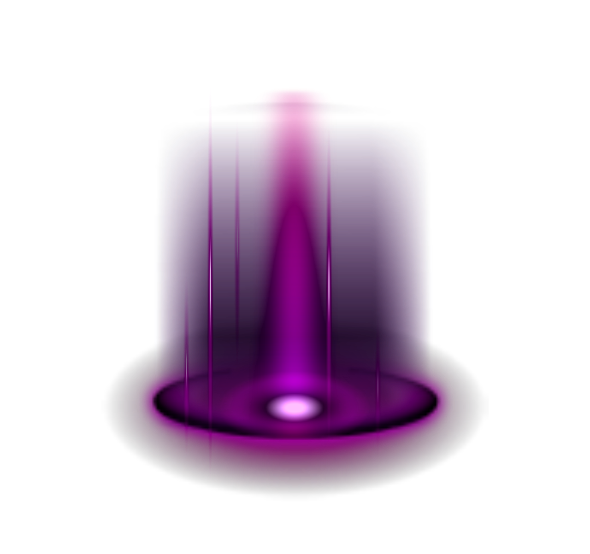
fazheng_skill2_1-animation_
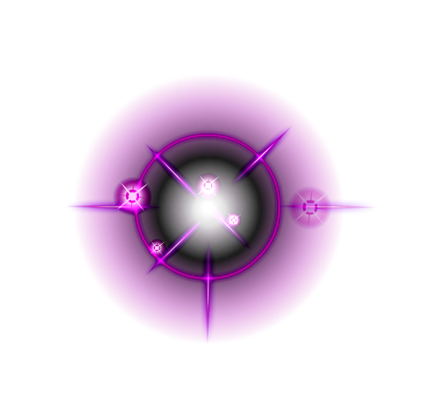
fazheng_skill2_2-anination_
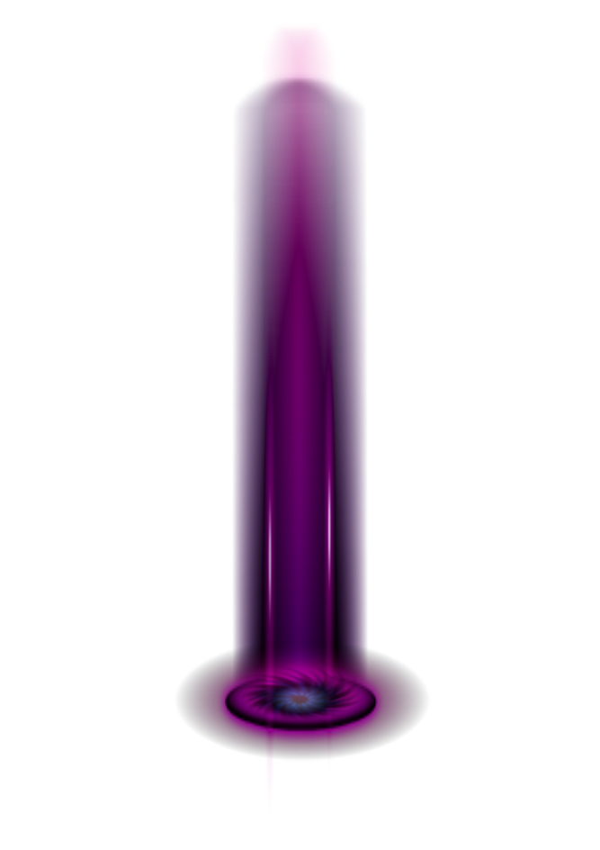
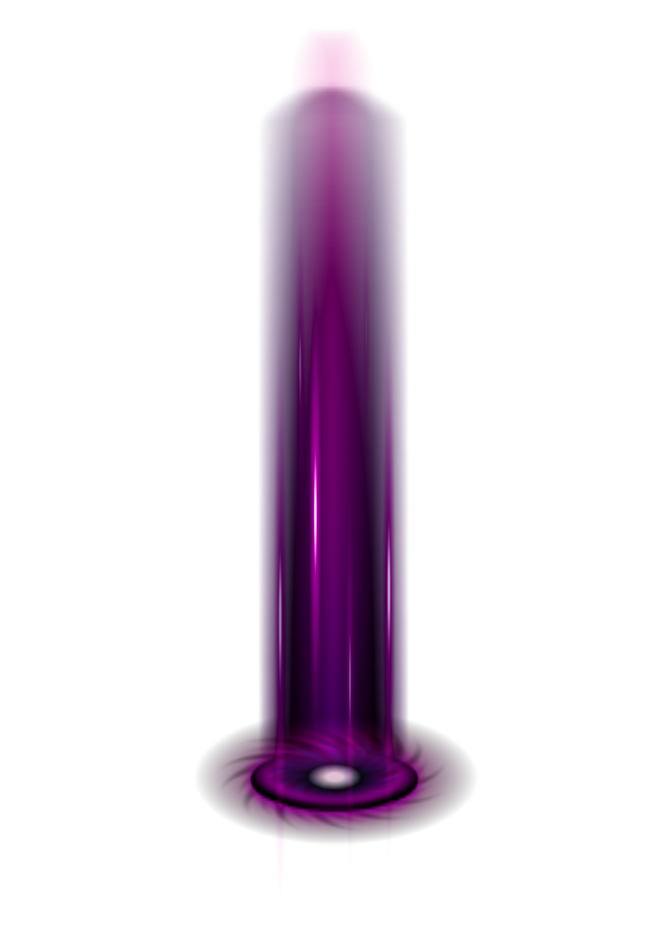
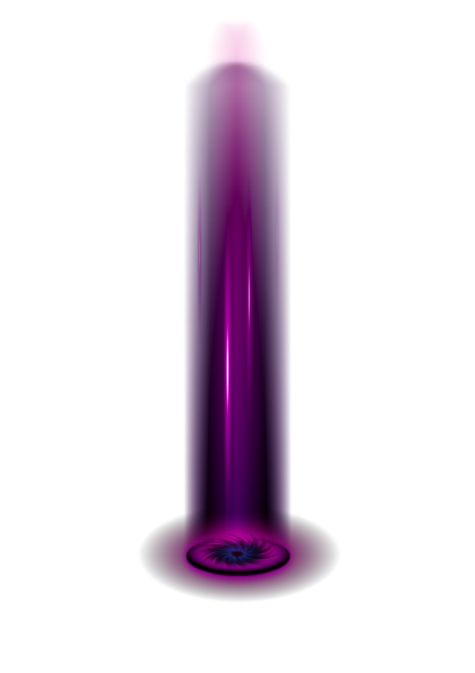
gushi_skill1-animation_
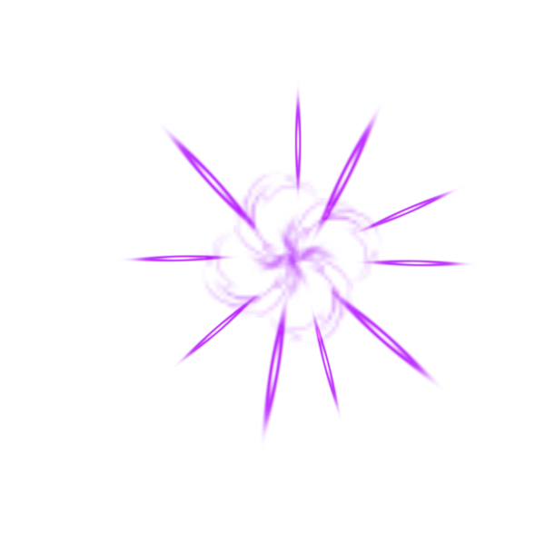
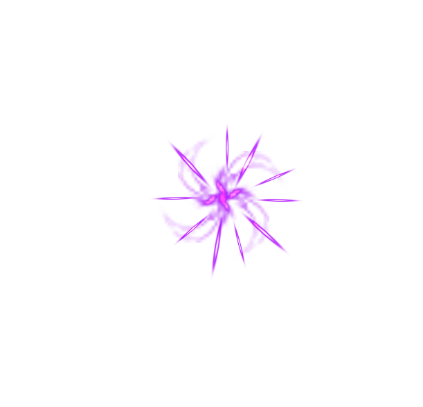
gushi_skill1_2-animation_
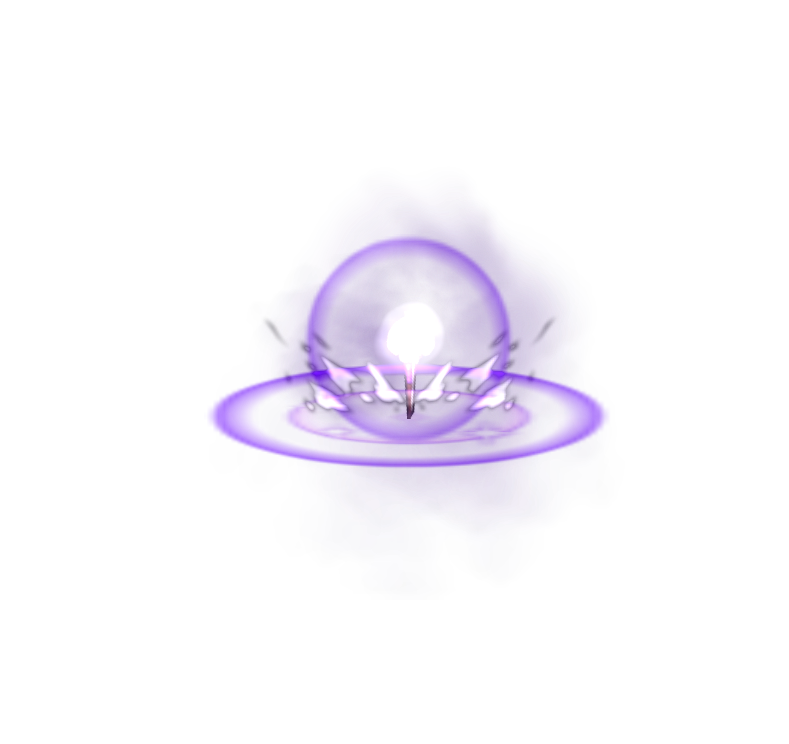
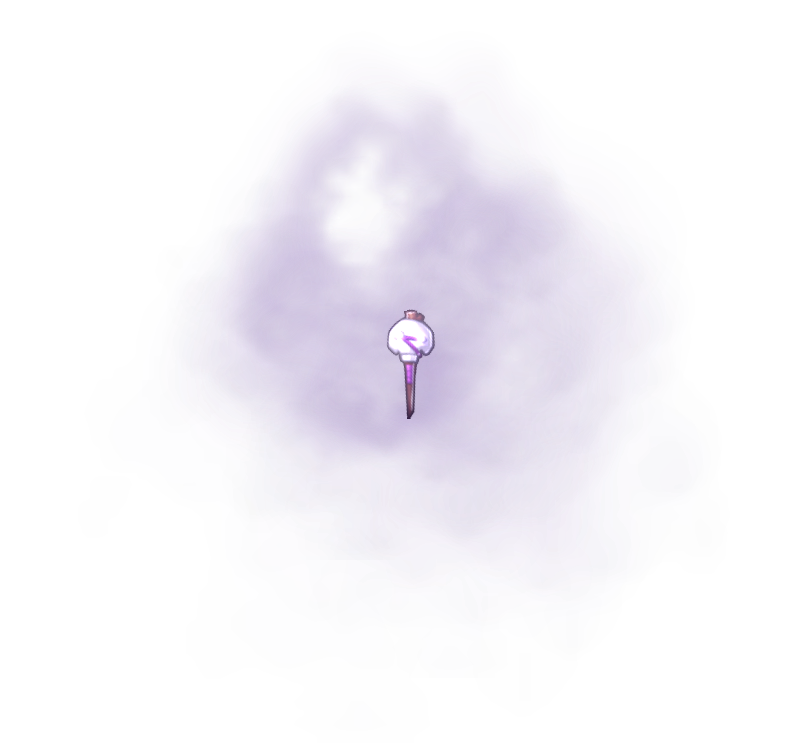
gushi_skill3-animation_
huangjinlishi_skill1-animation_
huangjinlishi_skill1_2-animation_
liubiao_phyattack-phyattack_
liubiao_phyattack_1-liubiao_phyattack_1_
liubiao_skill1-animation_
liubiao_skill1_1-animation_